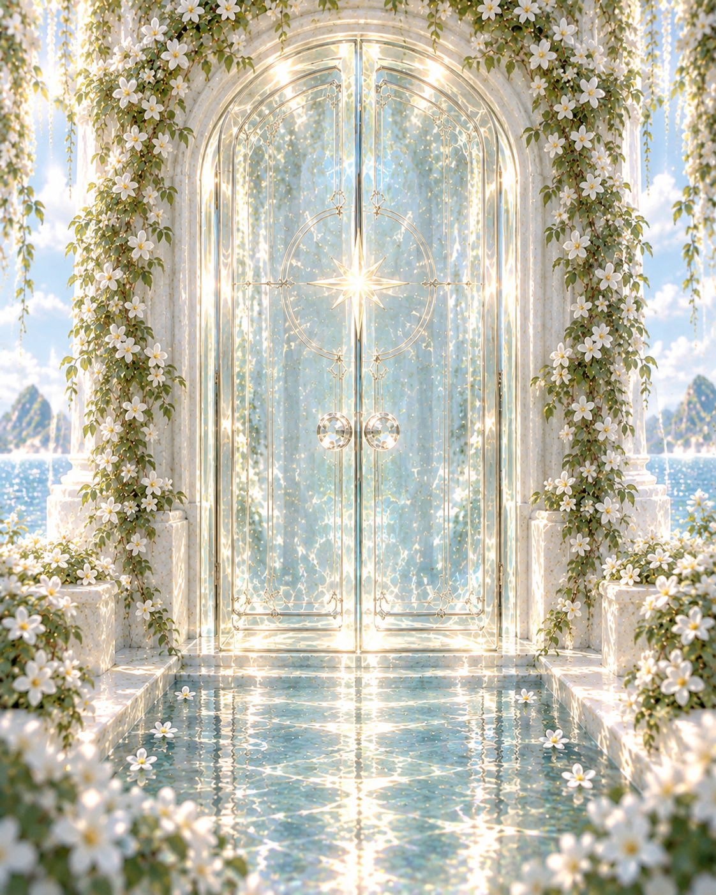
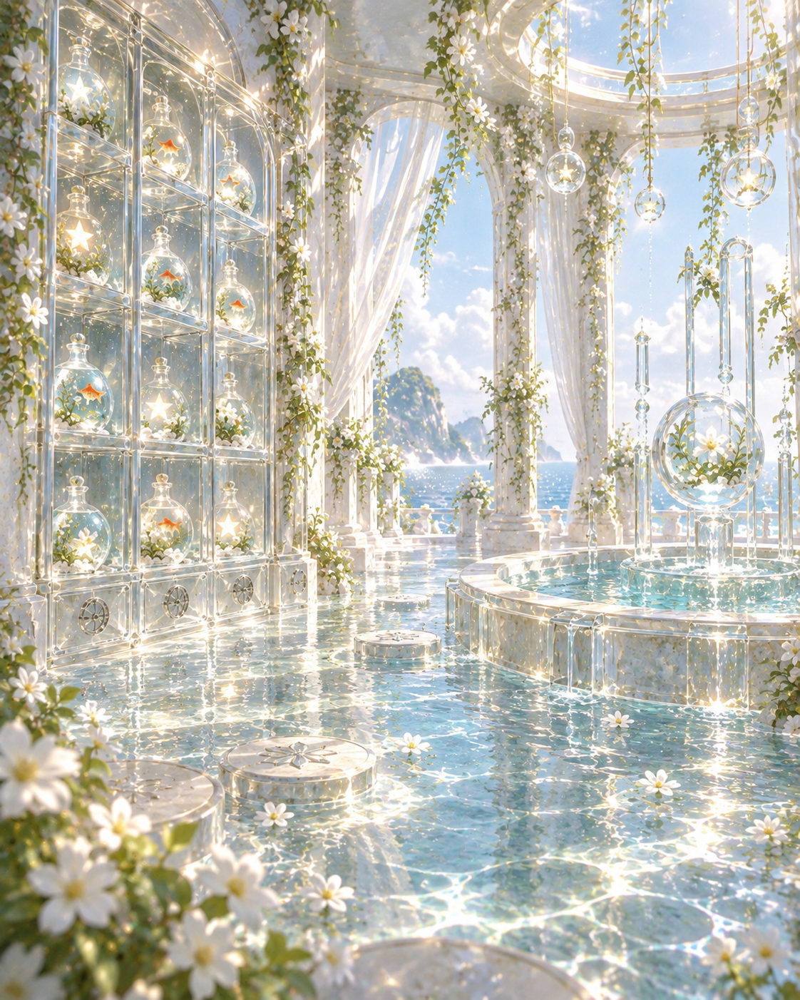
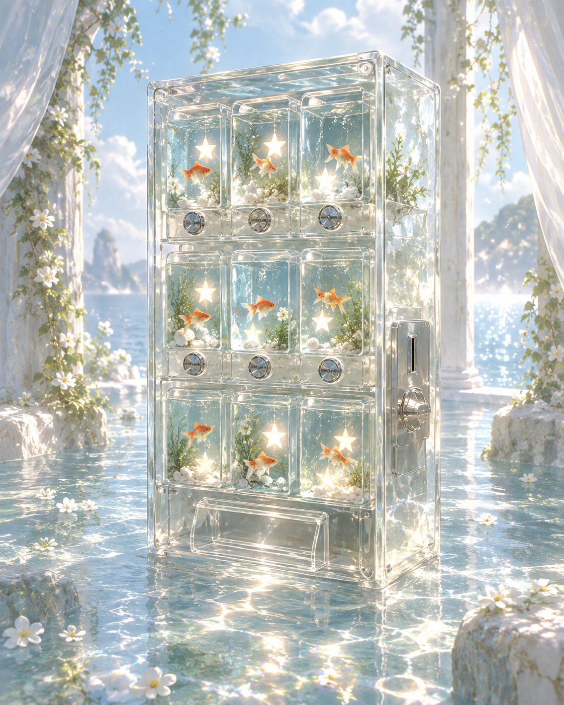

<!doctype html><html lang="zh-CN"><head><meta charset="UTF-8"><meta name="viewport" content="width=device-width,initial-scale=1"><title>声迹 · 记忆之室</title><style>
:root{font-family:"Microsoft YaHei","PingFang SC",sans-serif;color:#173f45;background:#dcece9}*{box-sizing:border-box}html,body,#app{margin:0;min-width:320px;min-height:100%;width:100%}button{font:inherit}.scene{min-height:100vh;position:relative;display:flex;justify-content:center;overflow:hidden;isolation:isolate;animation:enter .7s ease both}.bg{position:absolute;inset:0;width:100%;height:100%;object-fit:cover;z-index:-2}.shade{position:absolute;inset:0;background:rgba(15,52,58,.27);z-index:-1}.brand,.chapter{position:absolute;top:24px;color:white;text-shadow:0 2px 14px #234;font-size:12px;letter-spacing:.14em;z-index:3}.brand{left:32px}.chapter{right:32px}.hero{align-self:flex-end;text-align:center;color:white;margin-bottom:7vh;width:min(620px,calc(100% - 40px));text-shadow:0 3px 22px #234}.hero h1{font:500 clamp(42px,6vw,72px) Georgia,"Songti SC",serif;letter-spacing:.08em;margin:0 0 10px}.hero p{font-size:15px;letter-spacing:.06em;line-height:1.8;margin:0 0 24px}.btn{border:1px solid #fff;border-radius:999px;padding:12px 23px;cursor:pointer;transition:.2s}.btn:hover{transform:translateY(-2px)}.btn:disabled{opacity:.45;cursor:not-allowed;transform:none}.primary{background:rgba(255,255,255,.93);color:#28585e}.glass{background:rgba(31,77,82,.58);color:white;backdrop-filter:blur(12px)}.light{background:rgba(255,255,255,.84);color:#28585e}.roomnav{width:min(1050px,calc(100% - 46px));align-self:center;padding-top:39vh;display:grid;grid-template-columns:1fr 1fr;gap:30px}.place{min-height:170px;border:1px solid #fff;border-radius:26px;background:rgba(20,64,69,.45);color:white;text-align:left;padding:24px;backdrop-filter:blur(9px);cursor:pointer}.place:disabled{opacity:.54}.place small{display:block;letter-spacing:.12em}.place strong{display:block;font:500 29px Georgia,"Songti SC",serif;margin-top:9px}.place p{font-size:13px;line-height:1.7}.back{position:absolute;top:64px;left:32px;z-index:4}.cabinet{width:min(1180px,calc(100% - 44px));margin:78px auto 28px;display:grid;grid-template-columns:1.25fr .75fr;gap:22px}.visual{min-height:650px;border-radius:27px;overflow:hidden;position:relative;box-shadow:0 25px 70px #2346}.visual img{position:absolute;inset:0;width:100%;height:100%;object-fit:cover}.caption{position:absolute;left:20px;bottom:18px;background:rgba(255,255,255,.84);padding:10px 14px;border-radius:12px;font-size:12px}.panel{background:rgba(250,253,252,.92);backdrop-filter:blur(18px);border:1px solid white;border-radius:27px;padding:24px}.panel h2,.poolcopy h2,.orbcard h2{font:500 30px Georgia,"Songti SC",serif;margin:2px 0 8px}.panel>p{font-size:13px;line-height:1.65;color:#58787b}.list{display:grid;gap:8px;max-height:425px;overflow:auto}.memory{border:1px solid #c6dcd8;border-radius:15px;padding:11px;background:#ffffffcc;display:grid;grid-template-columns:1fr auto;gap:8px;align-items:center}.memory.on{border-color:#5b9795;background:#e0f2ee}.memory b,.memory small{display:block}.memory b{font-size:14px}.memory small{font-size:11px;color:#718b8d}.actions{display:flex;gap:5px}.mini{border:1px solid #9bbfba;border-radius:999px;background:white;color:#35676a;padding:6px 9px;font-size:11px;cursor:pointer}.tray{min-height:52px;display:flex;gap:7px;flex-wrap:wrap;align-items:center;padding:12px 0}.pill{background:#467b7c;color:white;border-radius:999px;padding:7px 10px;font-size:11px}.footer{display:flex;justify-content:space-between;align-items:center}.count{font-size:12px;color:#607d80}.poolbox{width:min(1050px,calc(100% - 44px));min-height:100vh;display:flex;flex-direction:column;justify-content:flex-end;padding:95px 0 34px}.poolcopy{margin-bottom:auto;text-align:center;color:white;text-shadow:0 2px 15px #234}.poolcopy p{font-size:13px}.progress{width:min(530px,90%);height:5px;background:#ffffff66;border-radius:6px;margin:16px auto;overflow:hidden}.progress span{display:block;height:100%;background:white;transition:.55s}.pourtray{display:flex;justify-content:center;gap:12px}.pour{width:180px;min-height:112px;text-align:left;border:1px solid white;border-radius:18px;background:#fafffddd;color:#28565b;padding:15px;cursor:pointer}.pour b,.pour small{display:block}.pour small{color:#6d888b;margin:7px 0 12px}.pour.done{opacity:.58}.flash{position:absolute;inset:0;background:#e1fff999;animation:flash .75s ease both}.orbwrap{width:min(620px,calc(100% - 40px));display:grid;place-items:center;text-align:center;color:white}.orbcard{background:#143d4255;border:1px solid white;border-radius:28px;padding:28px;backdrop-filter:blur(14px)}.orbcard p{font-size:13px;line-height:1.7}.controls{display:flex;justify-content:center;gap:9px}.toast{position:fixed;bottom:22px;left:50%;transform:translateX(-50%);background:#143c42dd;color:white;padding:9px 15px;border-radius:999px;font-size:12px;z-index:10}@keyframes enter{from{opacity:0;transform:scale(1.012)}to{opacity:1}}@keyframes flash{from{opacity:0}35%{opacity:1}to{opacity:0}}@media(max-width:760px){.roomnav{grid-template-columns:1fr;gap:11px;padding-top:28vh}.cabinet{grid-template-columns:1fr}.visual{min-height:48vh}.pour{width:31%}}
</style></head><body><main id="app"></main><script>
const app=document.querySelector('#app'),items=[{id:'rain',name:'窗边的雨',type:'环境记忆',desc:'雨滴落在窗台',audio:'assets/rain.wav'},{id:'sea',name:'海风来信',type:'环境记忆',desc:'潮声与夏天',audio:'assets/sea.wav'},{id:'melody',name:'未完成的哼唱',type:'旋律记忆',desc:'没有名字的旋律',audio:'assets/melody.wav'},{id:'station',name:'傍晚车站',type:'地点记忆',desc:'列车留下的回声',audio:'assets/rain.wav'},{id:'garden',name:'白花庭院',type:'自然记忆',desc:'风吹过花叶',audio:'assets/sea.wav'},{id:'voice',name:'那句晚安',type:'人声记忆',desc:'被保存的一句话',audio:'assets/melody.wav'}],s={view:'door',selected:[],poured:[],playing:null,flash:false,toast:''};let audio,timer;
function stop(){if(audio){audio.pause();audio.currentTime=0}audio=null;s.playing=null}function go(v){stop();s.view=v;draw()}function say(t){s.toast=t;clearTimeout(timer);timer=setTimeout(()=>{s.toast='';draw()},1800);draw()}function listen(x,final=false){if(s.playing===x.id){stop();draw();return}stop();audio=new Audio(final?'assets/final.wav':x.audio);audio.volume=.75;audio.onended=()=>{s.playing=null;draw()};audio.play().catch(()=>say('暂时无法播放'));s.playing=x.id;draw()}function choose(x){let i=s.selected.findIndex(v=>v.id===x.id);if(i>-1)s.selected.splice(i,1);else if(s.selected.length<3)s.selected.push(x);else return say('每次只能带走三瓶记忆');draw()}function pour(x){if(s.poured.includes(x.id))return;s.poured.push(x.id);s.flash=true;listen(x);setTimeout(()=>{s.flash=false;draw()},700);if(s.poured.length===3)setTimeout(()=>{stop();go('orb')},1800);else draw()}function frame(c,ch){return `<section class="scene">${c}<div class="brand">声迹 · SOUNDTRACE</div><div class="chapter">${ch}</div>${s.toast?`<div class="toast">${s.toast}</div>`:''}</section>`}
function door(){return frame(`<div class="hero"><h1>记忆之室</h1><p>推开门，找回那些曾被声音保存下来的瞬间。</p><button class="btn primary" data-go="room">推门进入</button></div>`,'序章 · 门')}function room(){let r=s.selected.length===3;return frame(`<div class="shade"></div><div class="roomnav"><button class="place" data-go="cabinet"><small>01 · 聆听与选择</small><strong>记忆柜</strong><p>试听柜中保存的声音，并带走三瓶记忆。</p></button><button class="place" data-go="pool" ${r?'':'disabled'}><small>02 · 融合与生成</small><strong>记忆池</strong><p>${r?'三瓶记忆已准备好。':`还需要选择 ${3-s.selected.length} 瓶记忆。`}</p></button></div>`,'第一章 · 房间')}
function cabinet(){let rows=items.map(x=>{let on=s.selected.some(v=>v.id===x.id);return `<article class="memory ${on?'on':''}"><div><b>${x.name}</b><small>${x.type} · ${x.desc}</small></div><div class="actions"><button class="mini" data-listen="${x.id}">${s.playing===x.id?'停止':'试听'}</button><button class="mini" data-choose="${x.id}">${on?'放回':'拿走'}</button></div></article>`}).join(''),pills=s.selected.length?s.selected.map(x=>`<span class="pill">${x.name}</span>`).join(''):'<span class="count">还没有选择记忆</span>';return frame(`<div class="shade"></div><button class="btn light back" data-go="room">返回房间</button><div class="cabinet"><div class="visual"><div class="caption">点击右侧条目试听柜中的记忆</div></div><aside class="panel"><h2>选择三瓶记忆</h2><p>寻找一段环境、一段旋律，以及一段你不愿忘记的声音。</p><div class="list">${rows}</div><div class="tray">${pills}</div><div class="footer"><span class="count">已选择 ${s.selected.length} / 3</span><button class="btn glass" data-go="pool" ${s.selected.length===3?'':'disabled'}>前往记忆池</button></div></aside></div>`,'第二章 · 记忆柜')}
function pool(){let cards=s.selected.map(x=>{let d=s.poured.includes(x.id);return `<button class="pour ${d?'done':''}" data-pour="${x.id}" ${d?'disabled':''}><b>${x.name}</b><small>${x.type}</small>${d?'已注入':'倒入池中'}</button>`}).join('');return frame(`<div class="shade"></div><button class="btn light back" data-go="cabinet">返回记忆柜</button><div class="poolbox"><div class="poolcopy"><h2>${s.poured.length?'记忆正在苏醒':'将记忆倒入池中'}</h2><p>${s.poured.length===3?'三段声音正在交织，请稍候……':'依次点击三瓶记忆。每一种声音都会改变池水的回响。'}</p><div class="progress"><span style="width:${s.poured.length/3*100}%"></span></div></div><div class="pourtray">${cards}</div></div>${s.flash?'<div class="flash"></div>':''}`,'第三章 · 记忆池')}
function orb(){return frame(`<div class="shade"></div><div class="orbwrap"><div class="orbcard"><h2>你的记忆旋律</h2><p>三段声音已在池中相遇，成为一颗可以重新聆听的记忆球。</p><div class="tray" style="justify-content:center">${s.selected.map(x=>`<span class="pill">${x.name}</span>`).join('')}</div><div class="controls"><button class="btn primary" data-final>${s.playing==='final'?'暂停旋律':'播放旋律'}</button><button class="btn light" data-reset>重新进入</button></div></div></div>`,'终章 · 记忆球')}function draw(){app.innerHTML=({door,room,cabinet,pool,orb})[s.view]()}
app.onclick=e=>{let b=e.target.closest('button');if(!b||b.disabled)return;if(b.dataset.go){if(b.dataset.go==='pool')s.poured=[];go(b.dataset.go)}if(b.dataset.listen)listen(items.find(x=>x.id===b.dataset.listen));if(b.dataset.choose)choose(items.find(x=>x.id===b.dataset.choose));if(b.dataset.pour)pour(s.selected.find(x=>x.id===b.dataset.pour));if(b.hasAttribute('data-final'))listen({id:'final'},true);if(b.hasAttribute('data-reset')){stop();s.view='door';s.selected=[];s.poured=[];draw()}};draw();
</script></body></html>